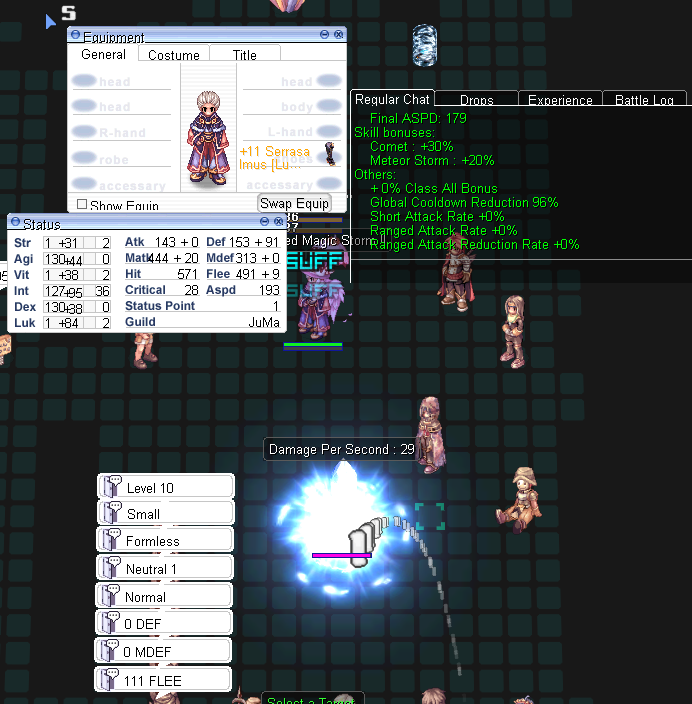
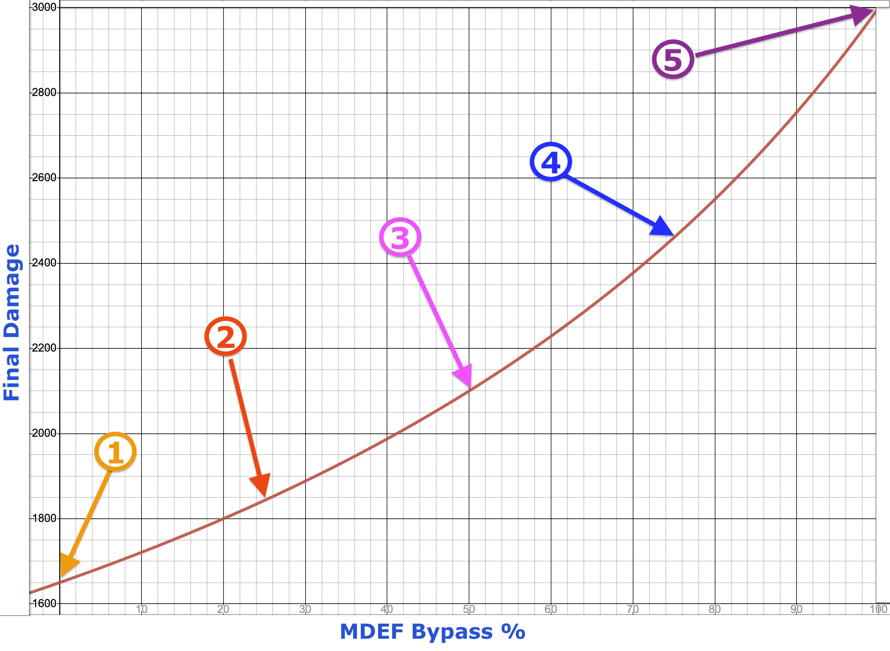

File list
Jump to navigation
Jump to search
This special page shows all uploaded files.
{kind=link}
{kind=link}
| Date | Name | Thumbnail | Size | User | Description | Versions |
|---|---|---|---|---|---|---|
| 03:13, 27 June 2022 | WL Spreadsheet Loomus1.png (file) |  |
49 KB | HairyWizard | 1 | |
| 01:46, 27 June 2022 | WL Spreadsheet Haise2.png (file) |  |
78 KB | HairyWizard | 1 | |
| 01:42, 27 June 2022 | WL Spreadsheet Haise1.png (file) | 155 KB | HairyWizard | 1 | ||
| 01:42, 27 June 2022 | WL Spreadsheet Rocha1.png (file) | 32 KB | HairyWizard | 1 | ||
| 21:36, 26 June 2022 | PKS Normal.png (file) | 3 KB | HairyWizard | 1 | ||
| 21:35, 26 June 2022 | PKS Boss.png (file) | 2 KB | HairyWizard | 1 | ||
| 14:43, 26 June 2022 | ShadowEQPWindow.png (file) |  |
22 KB | Egg | 1 | |
| 14:11, 26 June 2022 | NPC SG UPG Klein.png (file) |  |
58 KB | Egg | 1 | |
| 14:10, 26 June 2022 | NPC SG TTH Duran.png (file) | 56 KB | Egg | 1 | ||
| 14:10, 26 June 2022 | NPC SG REF Ryler.png (file) | 61 KB | Egg | 1 | ||
| 14:10, 26 June 2022 | NPC SG NTF Auran.png (file) | 58 KB | Egg | 1 | ||
| 14:10, 26 June 2022 | NPC SG FNH Alden.png (file) | 57 KB | Egg | 1 | ||
| 14:10, 26 June 2022 | NPC SG AL Nuran.png (file) | 59 KB | Egg | 1 | ||
| 14:10, 26 June 2022 | NPC SG AJ Rydel.png (file) | 60 KB | Egg | 1 | ||
| 14:09, 26 June 2022 | NPC SG MH Harek.png (file) | 62 KB | Egg | 1 | ||
| 18:00, 21 June 2022 | Melonring.png (file) |  |
760 bytes | Haste | 1 | |
| 17:25, 16 June 2022 | CL 179 93.PNG (file) | 196 KB | HairyWizard | 2 | ||
| 16:55, 16 June 2022 | CL 193 100.PNG (file) |  |
186 KB | HairyWizard | 1 | |
| 16:55, 16 June 2022 | CL 193 96.PNG (file) |  | 193 KB | HairyWizard | 1 | |
| 16:55, 16 June 2022 | CL 188 96.PNG (file) |  |
168 KB | HairyWizard | 1 | |
| 16:54, 16 June 2022 | CL 183 96.PNG (file) | 189 KB | HairyWizard | 1 | ||
| 16:54, 16 June 2022 | CL 179 96.PNG (file) |  |
170 KB | HairyWizard | 1 | |
| 16:29, 16 June 2022 | CL 179 90.PNG (file) | 176 KB | HairyWizard | 1 | ||
| 22:58, 15 June 2022 | Bs vct.PNG (file) | 4 KB | HairyWizard | 1 | ||
| 22:58, 15 June 2022 | Bs skill bonuses.PNG (file) | 7 KB | HairyWizard | 1 | ||
| 22:58, 15 June 2022 | Bs size bonus.PNG (file) | 4 KB | HairyWizard | 1 | ||
| 22:57, 15 June 2022 | Bs race bonus.PNG (file) | 5 KB | HairyWizard | 1 | ||
| 22:57, 15 June 2022 | Bs mdef bypass race.PNG (file) | 14 KB | HairyWizard | 1 | ||
| 22:56, 15 June 2022 | Bs magic class bonus.PNG (file) | 3 KB | HairyWizard | 1 | ||
| 22:56, 15 June 2022 | Bs elemental bonus.PNG (file) |  |
11 KB | HairyWizard | 1 | |
| 22:56, 15 June 2022 | Bs acd.PNG (file) | 10 KB | HairyWizard | 1 | ||
| 22:49, 15 June 2022 | Bs mon element.PNG (file) | 12 KB | HairyWizard | 1 | ||
| 21:48, 15 June 2022 | White Porcellio Damage.PNG (file) | 91 KB | HairyWizard | 1 | ||
| 21:32, 15 June 2022 | Red Mineral Damage.PNG (file) | 94 KB | HairyWizard | 1 | ||
| 21:22, 15 June 2022 | Mi white porcellio.PNG (file) | 26 KB | HairyWizard | 1 | ||
| 21:22, 15 June 2022 | Mi red mineral.PNG (file) | 14 KB | HairyWizard | 1 | ||
| 19:47, 14 June 2022 | TrainingChamberLayout.PNG (file) | 207 KB | HairyWizard | Some useful NPCs outlined in the training chamber. | 1 | |
| 19:42, 14 June 2022 | TrainingChamberNPC.PNG (file) | 209 KB | HairyWizard | Just an image showing the location of the Training Chamber NPC in Prontera. | 1 | |
| 12:10, 11 June 2022 | Orcvsracingcap2.png (file) | 94 KB | Nithraniel | 1 | ||
| 12:09, 11 June 2022 | Orcvsracingcap1.png (file) | 84 KB | Nithraniel | 1 | ||
| 22:41, 3 June 2022 | FinalDamagePerMDEFBypass.jpg (file) |  | 735 KB | HairyWizard | 1 | |
| 22:01, 3 June 2022 | FinalDamagePerMDEFBypass.png (file) | 255 KB | HairyWizard | 1 | ||
| 18:27, 3 June 2022 | StatVCTGraph.png (file) | 126 KB | HairyWizard | Graph showing the sublinear growth rate of VCT reduction through stats. | 1 | |
| 22:02, 21 May 2022 | SS7.png (file) | 29 KB | Hurt Locker | 1 | ||
| 21:38, 21 May 2022 | SS6.png (file) | 21 KB | Hurt Locker | 1 | ||
| 21:16, 21 May 2022 | SS5.png (file) | 35 KB | Hurt Locker | 1 | ||
| 21:16, 21 May 2022 | SS4.png (file) | 23 KB | Hurt Locker | 1 | ||
| 20:58, 21 May 2022 | SS3.png (file) | 32 KB | Hurt Locker | 1 | ||
| 20:56, 21 May 2022 | SS2.png (file) |  |
30 KB | Hurt Locker | 1 | |
| 20:51, 21 May 2022 | SS1.png (file) | 28 KB | Hurt Locker | 1 |
{kind=link}
{kind=link}
{kind=link}
{kind=link}
{kind=link}
{kind=link}
{kind=link}